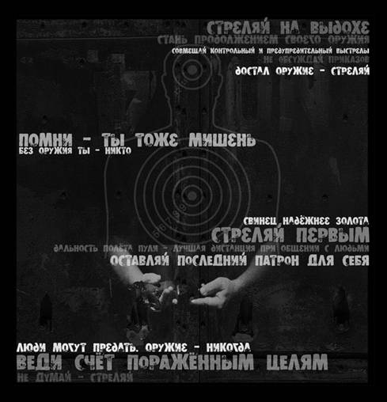

Напоследок
Как говорится, «пока верстался номер», поступило еще одно возражение. Не то, чтобы особо новое, все есть выше в тексте, но тут оно сконцентрировано и, главное, касается именно России и сейчас. Цитирую:
«Рассмотрим не сферического коня в вакууме (опыт США, Прибалтики и т.д.), а наши российские реалии. Вот хоть бы на примере Москвы. Сейчас самым опасным оружием в руках гражданского населения являются травматические пистолеты. Если [сравнительно] законопослушный гражданин желает максимально обезопасить себя на улице, он покупает травматический пистолет. Такая ситуация продолжается уже много лет, вполне можно подвести итоги. Итоги: в криминальных сводках о применении травматического оружия мы не встретим ни единого случая, когда стрелял русский, — пальбу устраивает исключительно зверьё. Получается, травматы не просто неэффективны в руках русского населения, оно вообще их не использует.
Когда будет разрешена продажа короткоствола населению, и травмат перестанет быть самым опасным носимым гражданским оружием, планка просто поднимется до следующего щелчка. Думаешь русские ломанутся в магазины за «кольтами»? Ха! всё будет абсолютно так же, как и с травматами. В первую очередь короткостволом повально затоварится зверьё. У русских нет диких традиций покупать оружие раньше, чем штаны. Исторически сложилось, что в центральной России неадекватное поведение нетипично — нет и необходимости ходить вооруженным, как в джунглях. Многие оружия вообще не имеют, хотя финансово могут себе это позволить (дело в воспитании).
И наконец, главное: в стычке со зверьём, применяющим травмат, у русского человека есть значительные шансы защитить себя (и выйти если не победителем, то хотя бы не побеждённым). Тому есть множество подтверждений. Против же огнестрельного оружия таких шансов нет. Появление огнестрельного оружия у зверья будет означать полный диктат этнического криминала на московских улицах.»
Я, честно говоря, не понимаю, каким образом в стычке со зверьём, применяющим травмат, у русского человека есть значительные шансы защитить себя (и выйти если не победителем, то хотя бы не побеждённым). Особенно если «зверья» несколько и все с травматами. Спасти тут может только и именно короткоствол, когда численное преимущество имеет не столь важное значение при «гоп-стопе» и подобном.
Дело даже не в том, что именно открытого диктата этнопреступности в Москве власти все же не допустят (причины тут опускаю, оффтоп, в двух словах — выгоднее пилить деньги экономически, чем вызывать народные волнения и играть на руку «русским фашистам» наглядной агитацией).
Дело в том, что декларируется заранее проигрышная позиция. «Я буду себя вести тихо, может, не тронут». Признается de facto право того самого «зверья» носить оружие с одновременным отказом от обороны, «только не очень сильно бейте».
И вот именно такая позиция и приводит к тому, что усиливается диктат этнического криминала на улицах — есть понимание, что нарваться на отпор крайне маловероятно. А вот если вероятность будет — то большинство гопников, независимо от национальности, жаждет именно покуражиться, а вовсе не рисковать своим здоровьем, а то и жизнью.
Не менее важно, что КС даже в самой крайней ситуации позволяет хоть кого-то забрать с собой — и умирать тогда будет не так обидно, чем в качестве жертвенного барашка. А если на каждое удачное нападение хотя бы один нападающий будет также убит, т.е. будет статистический размен 1:1, то желающие нападать достаточно быстро кончатся.
Примечание: я не повторяю те аргументы, которые приводились в статье, лишь конкретизирую ситуацию.
***
Рекомендую к прочтению:
Кроме того:
-
Вооруженный человек является гражданином. Безоружный — предметом.
-
Пушка в руках лучше, чем мент в телефоне.
-
Если оружие вызывает преступления, то клавиатура вызывает опечатки.
-
Тот, кто отдает свою свободу за безопасность, не получает ни того, ни другого.
-
У оружия только два врага: ржавчина и политики.
-
Ты стреляешь не чтобы убивать. Ты стреляешь, чтобы остаться в живых.
-
Преступники любят контроль за оружием. Он делает их работу безопасней.
-
Только правительство, которое боится своих граждан, пытается контролировать их.
-
У тебя есть только те права, за которые ты готов сражаться.
